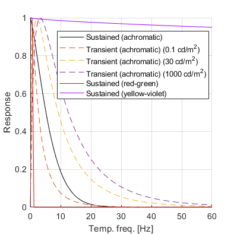
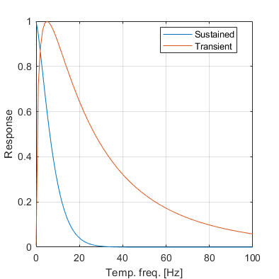
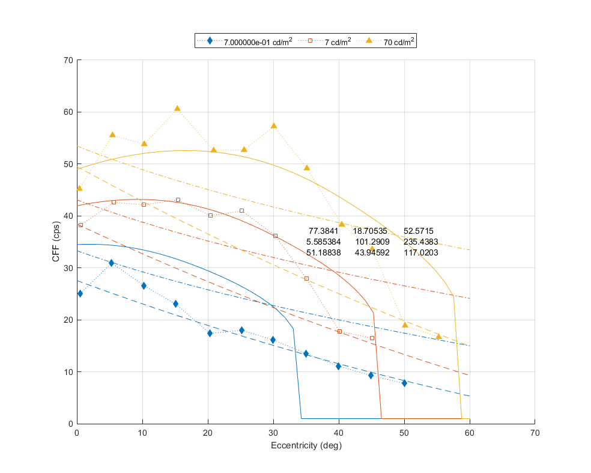
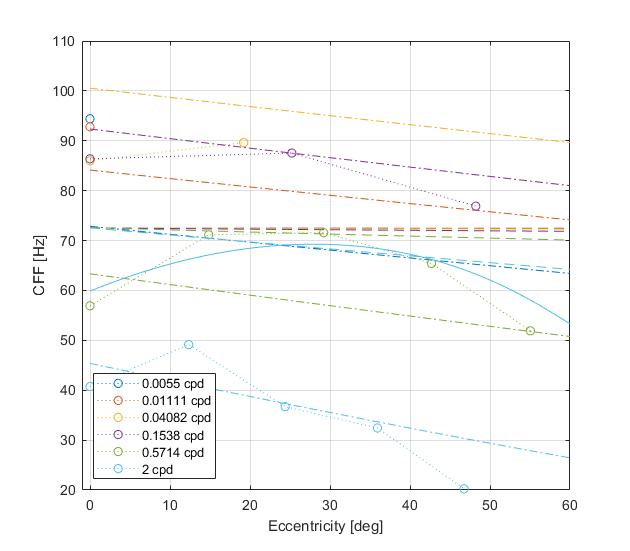
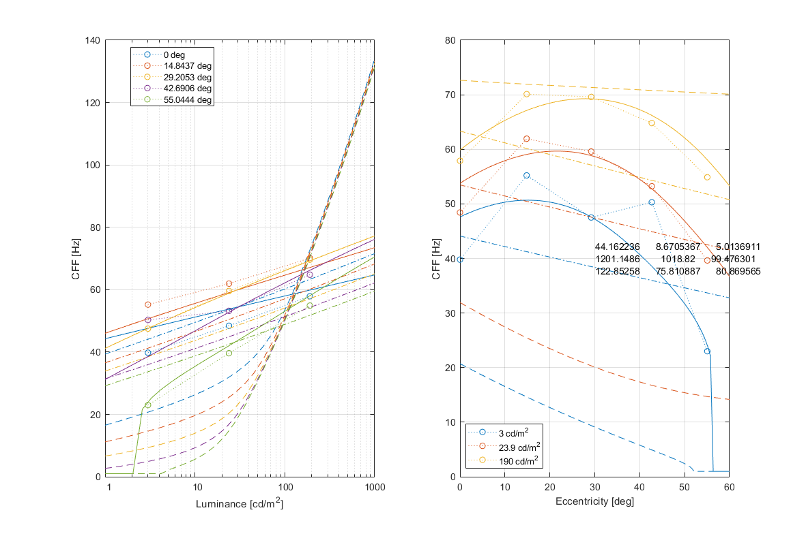
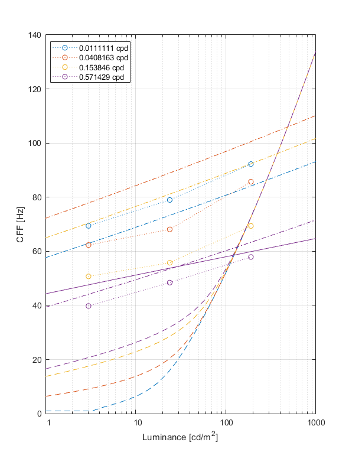
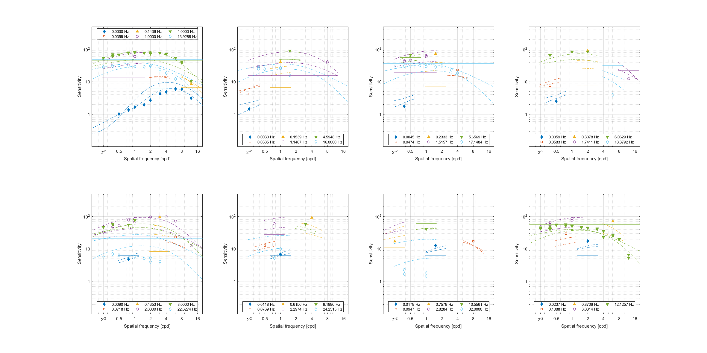
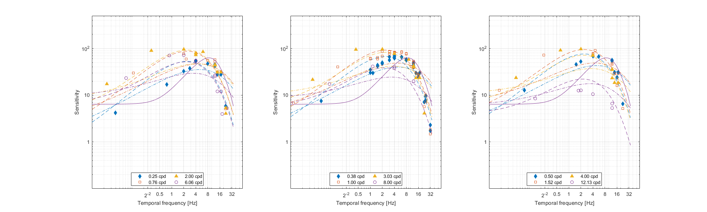

5-dimensional CSFs: spatial and temporal frequency, luminance, size and eccentricity
Fitting error
Model comparison statistics
| Model |
No. of free parameters |
Sum of Square Errors (SS) |
Degrees of freedom (df) |
F-test |
AIC |
| F-statistic |
p-value |
| elTCSF-3 (Reference Model) |
5 |
77.353 |
413 |
N/A |
N/A |
-695.211 |
| castleCSF |
53 |
6.819 |
365 |
7.84563 |
0.0000 ✓ |
-1614.37 |
| stelaCSF |
21 |
21.697 |
397 |
18.5721 |
0.0000 ✓ |
-1194.56 |
We use AIC and F-test to test whether the difference in fitting error is statistically significant at alpha=0.05 level. Both statistical metrics take the number of optimized parameters into account.
F-test: For F-test, we compare the fitting results from castleCSF with those of other models. The F-static is calculated using the residual sum of squares and degrees of freedom (number of data points - number of optimized parameters) from both models. The corresponding p-value indicates whether or not the null hypothesis is rejected, where H0: the castleCSF does not provide significant better fit than the other model. The p-values less than 0.05 indicates that castleCSF provides a better fit to the data at the significance level of 0.05 (marked with ✓). We performed the F-test for all individual datasets as well as for all datasets combined. For smaller datasets, where the number of data points are comparable to the number of model parameters, F-test can not provide any results since it indicates there is more variance within the models' fits than between.
AIC: Akaike information criterion is a statistical estimator of prediction error and relative quality of the models, which accounts for the number of parameters of each model.
The model with the lower AIC score is considered to be better and with a good balance of error value and the number of parameters.
The sensitivity adjustment column contains a multiplier that is used to adjust the sensitivity of each datasets. It corresponds to sd in the paper.
Model parameters
elTCSF-3
Parameters for TCSF component:
p.lum_k1 = 0.182145;
p.lum_k2 = 0.368317;
p.ecc_b = 18.7772;
p.ecc_c = 25.2379;
p.ecc_k1 = 0.0297414;
castleCSF
M_lms2acc =
1.0000 1.0000 0
1.0000 -2.3112 0
-1.0000 -1.0000 50.9875
p.rg.sigma_sust = 4.99887;
p.rg.beta_sust = 42.1362;
p.rg.ch_sust.S_max = [ 854.156 32.9149 0.392226 ];
p.rg.ch_sust.f_max = 0.42036;
p.rg.ch_sust.bw = 1.9427e-05;
p.rg.A_0 = 3098.22;
p.rg.f_0 = 0.0872405;
p.rg.ecc_drop = 0.0591422;
p.rg.ecc_drop_nasal = 2.89609e-05;
p.rg.ecc_drop_f = 2.04986e-69;
p.rg.ecc_drop_f_nasal = 0.178708;
p.yv.sigma_sust = 338.776;
p.yv.beta_sust = 0.697809;
p.yv.ch_sust.S_max = [ 800951 2.23242e+07 0.0189134 ];
p.yv.ch_sust.f_max = 0.2489;
p.yv.ch_sust.bw = 2.35477e+11;
p.yv.A_0 = 123866;
p.yv.f_0 = 1.352e-08;
p.yv.ecc_drop = 3.85345e-11;
p.yv.ecc_drop_nasal = 5.85804e-141;
p.yv.ecc_drop_f = 1.23246e-07;
p.yv.ecc_drop_f_nasal = 1.72241e-05;
p.ach.ach_sust.S_max = [ 43.1889 28.3403 14.8241 5.58341e-07 9.66861e+09 ];
p.ach.ach_sust.f_max = [ 6.87519 62.7101 1.41478 ];
p.ach.ach_sust.bw = 0.000182816;
p.ach.ach_sust.a = 8.26537e+12;
p.ach.ach_sust.A_0 = 650.202;
p.ach.ach_sust.f_0 = 1.22933;
p.ach.ach_trans.S_max = [ 1.26041e-06 113.953 ];
p.ach.ach_trans.f_max = 0.0904969;
p.ach.ach_trans.bw = 1.32063;
p.ach.ach_trans.a = 0.000241177;
p.ach.ach_trans.A_0 = 5.65394;
p.ach.ach_trans.f_0 = 5.04488;
p.ach.sigma_trans = 0.193684;
p.ach.sigma_sust = 12.9088;
p.ach.omega_trans_sl = 0.711503;
p.ach.omega_trans_c = 1.1151;
p.ach.ecc_drop = 3.94007e-09;
p.ach.ecc_drop_nasal = 0.0238701;
p.ach.ecc_drop_f = 0.17065;
p.ach.ecc_drop_f_nasal = 2.7881e-06;
Parameters for Ach component:
p.ach_sust.S_max = [ 43.1889 28.3403 14.8241 5.58341e-07 9.66861e+09 ];
p.ach_sust.f_max = [ 6.87519 62.7101 1.41478 ];
p.ach_sust.bw = 0.000182816;
p.ach_sust.a = 8.26537e+12;
p.ach_sust.A_0 = 650.202;
p.ach_sust.f_0 = 1.22933;
p.ach_trans.S_max = [ 1.26041e-06 113.953 ];
p.ach_trans.f_max = 0.0904969;
p.ach_trans.bw = 1.32063;
p.ach_trans.a = 0.000241177;
p.ach_trans.A_0 = 5.65394;
p.ach_trans.f_0 = 5.04488;
p.sigma_trans = 0.193684;
p.sigma_sust = 12.9088;
p.omega_trans_sl = 0.711503;
p.omega_trans_c = 1.1151;
p.ecc_drop = 3.94007e-09;
p.ecc_drop_nasal = 0.0238701;
p.ecc_drop_f = 0.17065;
p.ecc_drop_f_nasal = 2.7881e-06;
Parameters for RG component:
p.ch_sust.S_max = [ 854.156 32.9149 0.392226 ];
p.ch_sust.f_max = 0.42036;
p.ch_sust.bw = 1.9427e-05;
p.A_0 = 3098.22;
p.f_0 = 0.0872405;
p.sigma_sust = 4.99887;
p.beta_sust = 42.1362;
p.ecc_drop = 0.0591422;
p.ecc_drop_nasal = 2.89609e-05;
p.ecc_drop_f = 2.04986e-69;
p.ecc_drop_f_nasal = 0.178708;
Parameters for YV component:
p.ch_sust.S_max = [ 800951 2.23242e+07 0.0189134 ];
p.ch_sust.f_max = 0.2489;
p.ch_sust.bw = 2.35477e+11;
p.A_0 = 123866;
p.f_0 = 1.352e-08;
p.sigma_sust = 338.776;
p.beta_sust = 0.697809;
p.ecc_drop = 3.85345e-11;
p.ecc_drop_nasal = 5.85804e-141;
p.ecc_drop_f = 1.23246e-07;
p.ecc_drop_f_nasal = 1.72241e-05;
stelaCSF
p.ach_sust.S_max = [ 6.62682 70.1069 4.41061 7.54866e-07 7.77268e+09 ];
p.ach_sust.f_max = [ 3.90861 28.5079 0.169189 ];
p.ach_sust.bw = 0.000216833;
p.ach_sust.a = 12448.7;
p.ach_trans.S_max = [ 0.141738 2817.45 ];
p.ach_trans.f_max = 1.08087e-09;
p.ach_trans.bw = 4.63911;
p.ach_trans.a = 0.000273035;
p.sigma_trans = 0.380449;
p.sigma_sust = 16.8026;
p.ecc_drop = 0.000106084;
p.ecc_drop_nasal = 0.0019391;
p.ecc_drop_f = 0.0192574;
p.ecc_drop_f_nasal = 0.00138716;
↸CSF model: elTCSF-3
↸CSF model: castleCSF
Sustained and transient response

↸CSF model: stelaCSF
Sustained and transient response

Legend
To keep the plots legible, only up to 3 models are plotted.
↸Dataset: [hartmann1979] Hartmann et al. 1979
CFF as a function of eccentricity at different luminance levels

↸Dataset: [krajancich2021] Krajancich et al. 2021
Critical fusion frequency at eccentricities

CFF at luminance levels for 0.57 cpd

CFF at luminance levels, foveal vision (ecc=0)

↸Dataset: [kelly1979] Kelly 1979
Spatial CSF for different temporal frequencies

Temporal CSF for different spatial frequencies
